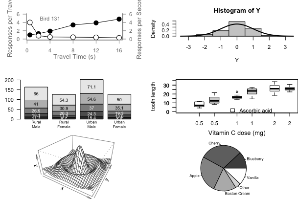
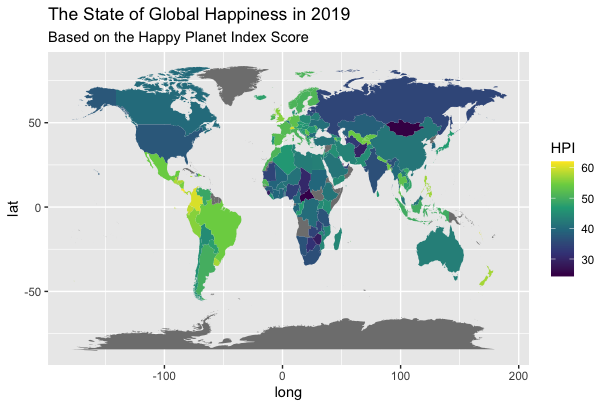
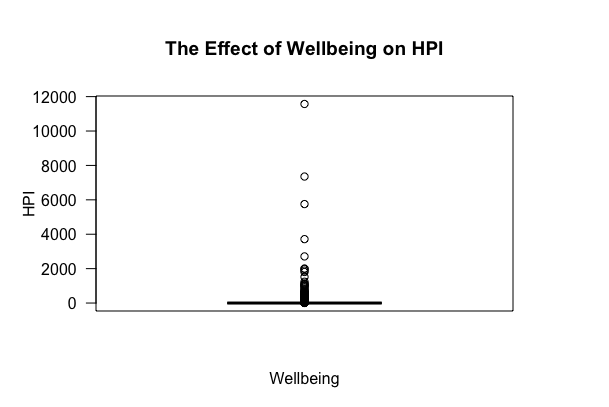

Build a Quarto blog on your personal website:
https://Diana-C-Rodriguez.github.io/blog
Run Paul Murrell’s RGraphics basic R programs (murrell01.R in GitHub)
1) plot(pressure, pch=16): Can you change pch?
Yes, the “pch” alters the shape of the data points on the graph
2) points(x, y1, pch=16, cex=2): Try different cex value?
I tried a larger “cex” value and noticed that the size of the data points became larger
3) axis(1, at=seq(0, 16, 4)): What is the first number standing for?
The following line correlates to the line in question: mtext(“Travel Time (s)”, side=1, line=2, cex=0.8).
4) Exercise: Can you generate these charts individually?
Yes. Each graph can be generated independently by isolating the desired graphs syntax.

